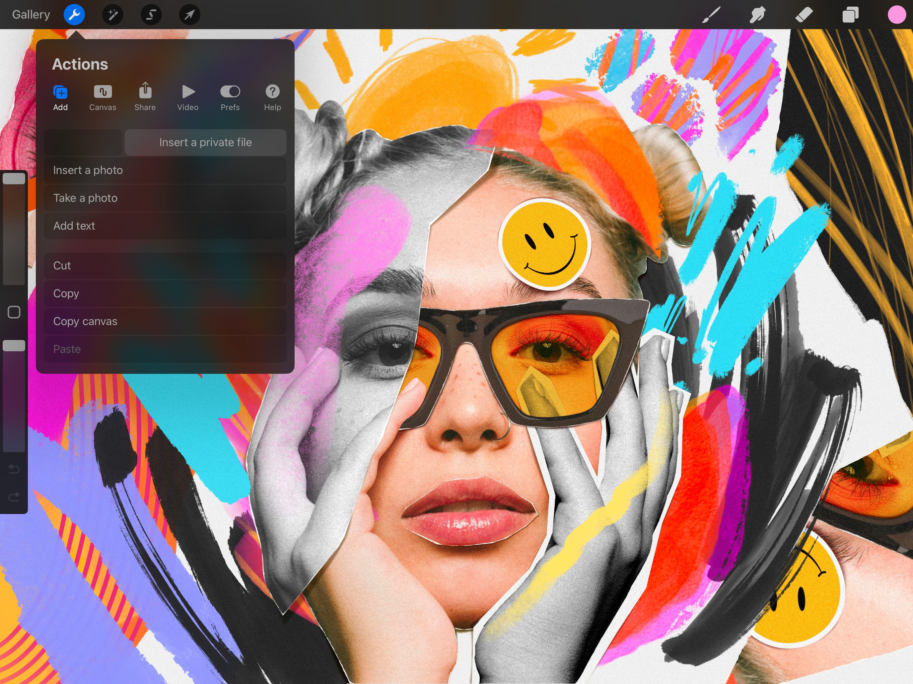
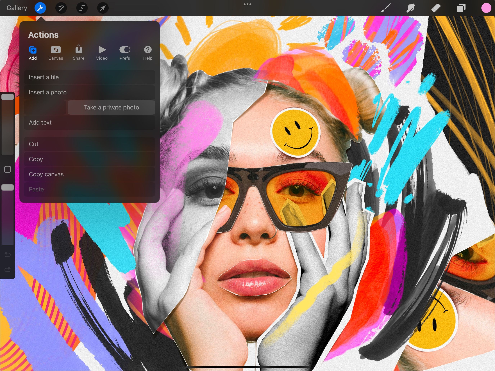
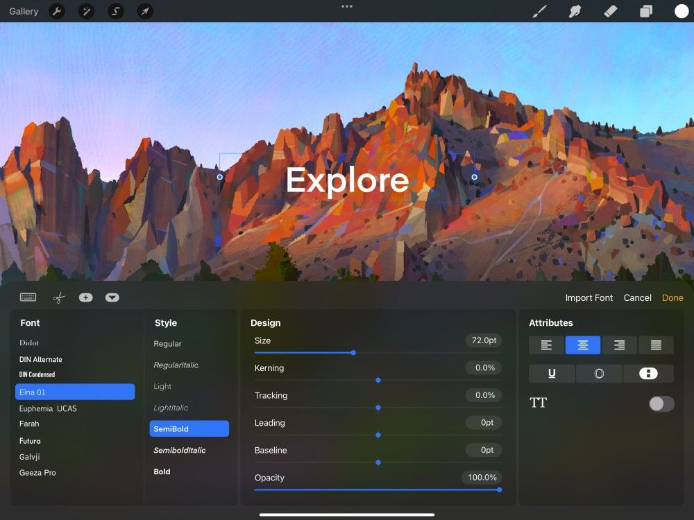

📖 Đã dịch sang tiếng Việt. Thuật ngữ chuyên môn giữ tiếng Anh — rê chuột để xem nghĩa (tooltip).
Add
Chèn ảnh vào khung vẽ, thêm chữ và dùng bảng tạm cho các thao tác cắt, sao chép và dán.
Insert
Procreate cung cấp nhiều cách để chèn hình ảnh vào khung vẽ.
Insert a File (chèn tệp)
Dùng ứng dụng Files để chèn ảnh từ bất kỳ vị trí đã kết nối nào.
Để chèn một tệp ảnh tương thích, chạm Actions → Add → Insert a file. Thao tác này sẽ mở ứng dụng Files hiển thị các ảnh gần đây của bạn. Bạn cũng có thể Browse (duyệt) tất cả thư mục đã kết nối bằng thanh điều hướng ở dưới cùng.
Bạn có thể nhập tệp PNG, JPEG và PSD.
Nếu nhập PSD theo cách này, nó sẽ được đặt vào tác phẩm dưới dạng ảnh đã làm phẳng. Để nhập PSD giữ nguyên tất cả các lớp, bạn phải dùng Gallery Import (nhập từ thư viện).
Insert a Photo (chèn ảnh)
Dùng ứng dụng Photos để chèn ảnh vào khung vẽ.
Để đưa ảnh JPEG, PNG hoặc PSD từ ứng dụng Photos vào khung vẽ, chạm Actions → Add → Insert a photo. Ứng dụng Photos sẽ hiện ra. Cuộn qua các thư mục để tìm ảnh bạn đã chụp và hình ảnh bạn đã lưu trên iPad.
Nếu nhập PSD theo cách này, nó sẽ được đặt vào tác phẩm dưới dạng ảnh đã làm phẳng. Để nhập PSD giữ nguyên tất cả các lớp, hãy dùng Gallery Import (nhập từ thư viện).
Take a Photo (chụp ảnh)
Chụp một ảnh bằng camera iPad và chèn vào khung vẽ.
Chạm Actions → Add → Take a photo để mở camera iPad.
Chụp một ảnh, chạm Use Photo, và nó sẽ xuất hiện trong bất kỳ tác phẩm đang mở nào, sẵn sàng để dùng.
Insert a Private Layer (chèn lớp riêng tư)
Nhập Tệp hoặc Ảnh dưới dạng Private Layer (lớp riêng tư) sẽ không xuất hiện trong Gallery hoặc video Time-lapse.
Private layers (lớp riêng tư) sẽ không hiển thị ảnh tham chiếu, hay nội dung khác không thuộc tác phẩm cuối cùng của bạn.
Insert a File as a Private Layer (chèn tệp dưới dạng lớp riêng tư)
Dùng ứng dụng Files để nhập ảnh từ bất kỳ vị trí đã kết nối nào dưới dạng Private Layer.


Để chèn một tệp ảnh tương thích dưới dạng Private Layer, chạm Actions > Add rồi vuốt tab Insert a file sang trái. Thao tác này sẽ làm xuất hiện nút Insert a private file màu xám, chạm vào để mở ứng dụng Files hiển thị các ảnh gần đây.
Dùng thanh điều hướng ở dưới cùng, bạn cũng có thể Browse tất cả thư mục đã kết nối. Bạn có thể nhập tệp PNG, JPEG và PSD. Nếu nhập PSD theo cách này, nó sẽ được đặt vào tác phẩm dưới dạng ảnh đã làm phẳng. Bạn không thể nhập tệp PSD có lớp dưới dạng Private Layer.
Once you've selected an image from the Files app it will appear on your Canvas. It will also appear in your Layers menu with the word Private under the Layer title.
Insert a Photo as a Private Layer (chèn ảnh dưới dạng lớp riêng tư)
Dùng ứng dụng Photos để nhập ảnh vào Canvas dưới dạng Private Layer.
Để đưa ảnh JPEG, PNG hoặc PSD từ ứng dụng Photos vào Canvas. Chạm Actions > Add rồi vuốt tab Insert a Photo sang trái cho đến khi xuất hiện nút Insert a private photo màu xám. Chạm để mở ứng dụng Photos và chọn một ảnh bạn đã chụp hoặc hình ảnh bạn đã lưu trên iPad.
Nếu nhập PSD theo cách này, nó sẽ được đặt vào tác phẩm dưới dạng ảnh đã làm phẳng. Bạn không thể nhập tệp PSD có lớp dưới dạng Private Layer.
Sau khi bạn chọn một ảnh, nó sẽ xuất hiện trên Canvas. Nó cũng sẽ xuất hiện trong menu Layers với chữ Private nằm dưới tiêu đề Layer.
Take a Photo as a Private Layer (chụp ảnh dưới dạng lớp riêng tư)
Chụp một ảnh bằng camera iPad và chèn vào Canvas dưới dạng Private Layer.

Chạm Actions > Add > rồi vuốt tab Take a Photo sang trái cho đến khi xuất hiện nút Take a private photo màu xám. Để chụp ảnh, chạm Take a private photo để mở ứng dụng Camera và chụp ảnh.
Sau khi bạn đã chụp ảnh, nó sẽ xuất hiện trên Canvas. Nó cũng sẽ xuất hiện trong menu Layers với chữ Private nằm dưới tiêu đề Layer.
Cắt, Sao chép hoặc Copy Canvas và dán vào Private Layer
Dán từ Paste Board và chèn vào Canvas dưới dạng Private Layer.
Cắt, Sao chép và Copy canvas như bình thường. Tìm hiểu thêm về cách Cắt, Sao chép và Copy canvas ở phần Cut / Copy / Paste.
Sau khi đã sao chép một vùng chọn, lớp hoặc toàn bộ ảnh, chạm Actions > Add rồi vuốt tab Paste sang trái cho đến khi xuất hiện nút Paste private màu xám. Chạm Paste private để dán nội dung Clip Board vào một Private Layer.
Sau khi dán, nó sẽ xuất hiện trên Canvas và trong menu Layers với chữ Private nằm dưới tiêu đề Layer.
Thêm Text
Nhập chữ vector có thể chỉnh sửa vào tác phẩm để tạo các thiết kế gọn gàng và nghệ thuật chữ ấn tượng.

Các công cụ typography của Procreate mang đến cho bạn cả thế giới cơ hội thiết kế. Tạo chữ vector sắc nét bằng các tính năng chỉnh sửa chữ chất lượng chuyên nghiệp. Truy cập nhiều font chữ được tải sẵn, hoặc thậm chí nhập những font yêu thích của riêng bạn.
Chạm nút hình cờ lê ở góc trên bên trái màn hình để mở menu Actions, sau đó chạm Add → Add text.
Một hộp chữ sẽ được thêm vào khung vẽ. Bạn có thể kéo hộp chữ để di chuyển, hoặc bắt đầu gõ ngay lập tức. Chạm Active Color để đổi màu chữ, hoặc chạm nút Edit Style để truy cập nhiều font chữ, công cụ thiết kế và tùy chọn chỉnh sửa.
Khi đã hài lòng với chữ, hãy mở panel Layers, chạm vào hình thu nhỏ của lớp Text, rồi chạm Rasterize. Thao tác này chuyển chữ vector của bạn thành pixel. Giờ đây bạn có thể áp dụng bất kỳ tính năng hay hiệu ứng nào của Procreate lên nó.
Phần Text cung cấp trình bày chuyên sâu về tính năng mạnh mẽ và đa năng này.
Cut / Copy / Paste (cắt / sao chép / dán)
Thêm, xóa và nhân đôi các phần của khung vẽ từ menu Actions.
Cắt một layer (lớp) hoặc vùng chọn.
Cắt tác phẩm đã chọn khỏi khung vẽ và lưu nó vào bảng tạm của iPadOS. Dán nó vào chỗ khác trong khung vẽ, hoặc vào một khung vẽ Procreate khác, hoặc một ứng dụng khác trên iPad.
Sao chép một layer hoặc vùng chọn.
Copy (sao chép) hoạt động giống như Cut, nhưng không xóa vùng chọn khỏi tác phẩm gốc.
Copy canvas (sao chép khung vẽ)
Sao chép toàn bộ khung vẽ.
Copy và Cut chỉ tác động lên một lớp duy nhất. Copy All sẽ sao chép nội dung của tất cả các lớp hiển thị trên Canvas dưới dạng một ảnh đã làm phẳng.
Thả ảnh đã Cut hoặc Copy sang một tác phẩm hoặc ứng dụng khác.
Sau khi đã Cắt hoặc Sao chép dữ liệu ảnh, hãy Paste nó vào chỗ khác trong khung vẽ hiện tại, hoặc vào một khung vẽ khác. Bạn thậm chí có thể dán vào email, trò chuyện và các ứng dụng tương thích khác.
Still have questions?
If you didn't find what you're looking for, explore our video resources on YouTube or contact us directly. We’re always happy to help.